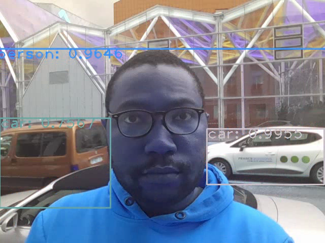
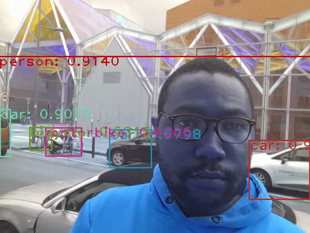
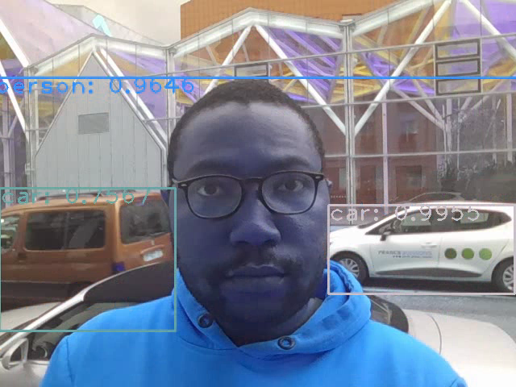
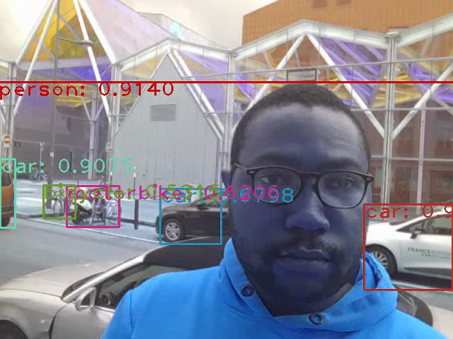

Mes Projets
Analyse des Voies Ferrées en Île-de-France pour les JO Paris 2024
Dans ce projet, j'ai utilisé Power BI Desktop pour analyser les voies ferrées en Île-de-France dans le cadre des préparations pour les JO Paris 2024.
j'ai ensuite publié le tableau de bord sur Power BI Service pour enfin incorporer le rapport dans du script html de ce porfolio. Le jeu des données est disponible sur le site officiel des JO Paris 2024.
Le projet comprend des visualisations des données sur les voies ferroviaires par exploitant (SNCF, RATP, KEOLIS, TRANSKEO,...) et/ou par mode de transport (métro, tramway, RER, ...).
Interagissez avec le tableau de bord ci-dessous pour explorer les données :
Détection des objets en temps réel
 



YOLO est un modèle Deep Learning basé sur des architectures de réseaux de neurones CNNs conçu pour une détection rapide et précise en temps réel des objets dans des images ou séquences vidéo. Jusqu'à présent, il a surpassé toutes les méthodes précédentes, surtout dans le domaine de la conduite autonome et de la surveillance. Le flux vidéo pour ce projet est la vidéo d'une caméra d'un ordinateur portable utilisé en extérieur et braqué sur une route.
Le lien du notebook Jupyter est ici.
J'ai utilisé les poids de Yolo version 4 et la liste des labels coco.names qu'on peut trouver sur le site officiel; aussi j'ai utilisé la librairie OpenCV pour obtenir la vidéo en continu de la caméra de mon ordinateur portable qui a servi à voir le résultat de la détection avec YOLO
À propos de moi
Issu de Nancy, une ville dans l'Est de la France, reconnue pour sa place Stanislas et une des plus belles villes étudiantes; je suis diplômé de l'Université de Lorraine en Master Ingébierie Mathématique et Science des Données.
Mes Compétences
- Visualisation des données : R shiny, Power BI
- Informatique : programmation (R, Python)
- Système de gestion de base des données : SQL (MySQL, PostegreSQL), NoSQL (MongoDB)
- Intelligence artificielle : deep learning (Tensorflow), machine learning (Scikit learn), computer vision (OpenCV)
- Développement web frontal : Html , CSS, Javascript